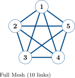
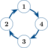
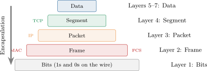
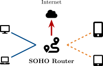
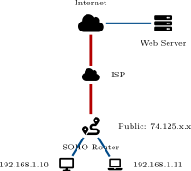

Figure: Diagram supporting the preceding content.
1 Introduction to Networks
Overview
Module Overview
- This module introduces the fundamental concepts you need to
understand computer networks.
- We will explore different types of networks and how they are physically
and logically organized.
- The OSI Model provides a framework for understanding how data
travels across networks.
- SOHO networks demonstrate how these concepts apply to small
office and home environments.
- A systematic troubleshooting methodology helps diagnose and
resolve network problems efficiently.
Topics Covered
-
1.
-
Networking Overview
-
2.
-
OSI Model Concepts
-
3.
-
SOHO Networks
-
4.
-
Troubleshooting
This module provides a foundational introduction to computer networking. We
begin with basic networking concepts and terminology, explore different network
types and topologies, and examine the OSI reference model. The module
concludes with practical applications in SOHO (Small Office/Home Office)
networks and introduces a systematic troubleshooting methodology.
Learning Outcomes
After completing this module, you will be able to:
- Define fundamental networking concepts and terminology used by
IT professionals.
- Identify different network types including LAN, WAN, PAN, MAN,
and CAN.
- Describe common network topologies and explain their advantages
and disadvantages.
- Explain the seven layers of the OSI model and the function of each
layer.
- Describe the components and functions of a SOHO router.
- Apply a systematic troubleshooting methodology to diagnose
network problems.
Key Terms Preview
Network Basics
- Node – Any device on a network
- Host – A device with an IP address
- Topology – Network layout/design
- Protocol – Rules for communication
Network Types
- LAN – Local Area Network
- WAN – Wide Area Network
- SOHO – Small Office/Home Office
OSI & Data
- OSI Model – 7-layer reference model
- Encapsulation – Wrapping data with headers
- PDU – Protocol Data Unit
Number Systems
- Binary – Base-2 (0 and 1)
- Hexadecimal – Base-16 (0–F)
- MAC Address – Hardware address
2 Networking Fundamentals
2.1 What is a Network?
A computer network is fundamentally about connectivity and resource sharing.
In this section, we explore the basic concepts that define networks and the
terminology used by networking professionals.
What is a Network?
- A computer network is two or more devices connected together to
share resources and communicate.
- Networks allow users to share files, printers, internet connections, and
applications across multiple devices.
- Every network requires three basic components: nodes (devices),
links (connections), and protocols (rules).
- Networks can be as simple as two laptops connected via Bluetooth or
as complex as the global internet.
Figure: Diagram supporting the preceding content.
Why Networks Matter
Networks enable collaboration, centralized data storage, resource sharing, and
communication—the foundation of modern business and daily life.
2.2 Basic Networking Concepts
Networking Concepts
- A node is any device connected to a network, including computers,
printers, and smartphones.
- A host is a specific type of node that has an IP address and can send
or receive data.
- Clients are devices that request resources or services from other
computers on the network.
- Servers are computers that provide resources or services to clients,
such as web pages, files, or email.
- In a peer-to-peer network, devices act as both clients and servers,
sharing resources directly with each other.
Client-Server Example
When you visit a website, your computer (client) sends a request to a web server,
which responds by sending the web page back to your browser.
2.3 Network Types
Networks are classified by their geographic scope and purpose. Understanding
these classifications helps in designing, managing, and troubleshooting networks
of different scales.
Network Types
- A LAN (Local Area Network) connects devices in a small
geographic area like a home, office, or school building.
- A WAN (Wide Area Network) connects LANs across large
geographic distances, often using leased telecommunication lines.
- A PAN (Personal Area Network) connects devices within a
person’s immediate workspace, typically within 10 meters.
- A MAN (Metropolitan Area Network) spans a city or campus,
larger than a LAN but smaller than a WAN.
- A CAN (Campus Area Network) connects multiple LANs within
a limited geographic area like a university or corporate campus.
The Internet
The internet is the largest WAN in existence—a global network of interconnected
networks using standardized protocols.
Network Types Comparison
| Type | Range | Example | Typical Speed |
| PAN | <10 meters | Bluetooth headset | 1–3 Mbps |
| LAN | Building/floor | Office network | 100 Mbps–10 Gbps |
| CAN | Campus | University network | 1–10 Gbps |
| MAN | City | City library system | 100 Mbps–1 Gbps |
| WAN | Global | Corporate branches | 1 Mbps–1 Gbps |
Size Relationship
PAN ⊂ LAN ⊂ CAN ⊂ MAN ⊂ WAN
Speed vs. Distance
Generally, smaller networks offer faster speeds due to shorter cable runs and
fewer devices.
3 Network Topologies
3.1 Understanding Network Topology
Network topology describes how devices are arranged and connected
in a network. Understanding topologies is essential for network design,
troubleshooting, and optimization.
What is Network Topology?
- Network topology describes the arrangement of nodes and
connections in a network.
- Physical topology refers to the actual layout of cables, devices, and
other hardware components.
- Logical topology describes how data flows through the network,
regardless of physical layout.
- Understanding topology helps network administrators design efficient
networks and troubleshoot problems.
- The choice of topology affects cost, performance, scalability, and fault
tolerance of a network.
Physical vs. Logical Example
A network might be physically wired in a star pattern (all cables to a
central switch), but logically function as a bus where all devices receive all
transmissions.
3.2 Star Topology
Star Topology
- In a star topology, all nodes connect to a central device such as a
switch or hub.
- This is the most common topology used in modern LANs due to its
simplicity and reliability.
- If one node or cable fails, only that device is affected—other nodes
continue to function normally.
- The central device is a single point of failure; if it fails, the entire
network goes down.
Advantages
Easy to install, manage, and troubleshoot; simple to add new devices.
Figure: Diagram supporting the preceding content.
3.3 Mesh Topology
Mesh Topology
- In a mesh topology, nodes are interconnected with multiple
redundant paths between them.
- A full mesh connects every node directly to every other node,
providing maximum redundancy.
- A partial mesh connects only some nodes with multiple paths,
balancing cost and redundancy.
- Mesh topologies are highly fault-tolerant because data can take
alternate routes if a link fails.
Formula: Full Mesh Links
Links needed = where n = number of nodes. Example: 5 nodes require = 10
links.

Figure: Diagram supporting the preceding content.
3.4 Legacy Topologies
Legacy Topologies
Bus Topology
- All nodes connect to a single central cable called the backbone or
bus.
- Signals travel along the bus and are received by all nodes.
- A break anywhere in the cable disables the entire network.
Figure: Diagram supporting the preceding content.
Ring Topology
- Each node connects to exactly two other nodes, forming a circular data
path.
- Data travels in one direction (or both in a dual ring).
- A single node failure can break the entire ring.

Figure: Diagram supporting the preceding content.
Why Legacy?
Bus and ring topologies are rarely used today due to their vulnerability to single
points of failure and difficulty in troubleshooting.
3.5 Case Study: Network Topology Selection
Case Study: Mystery Inc. Opens a Detective Agency
Case Study: Mystery Inc. Network Setup
The Mystery Inc. gang is opening a new detective agency headquarters and
needs to set up a computer network for five workstations.
Shaggy suggests: “Like, let’s just connect every computer to every other
computer, man. That way if Scooby chews through one cable, we’re still
connected!”
Velma responds: “Jinkies! That’s overkill. Let’s connect everything to one
central switch instead—it’s much more practical.”
Review Questions
-
1.
-
What network topology is Shaggy describing?
-
2.
-
What network topology is Velma describing?
-
3.
-
Which topology would be more practical for a small office, and why?
-
4.
-
How many cables would Shaggy’s design require for 5 computers?
Case Study Solution: Mystery Inc. Network Setup
Solution: Mystery Inc. Network Setup
-
1.
-
Shaggy is describing a full mesh topology, where every device
connects directly to every other device.
-
2.
-
Velma is describing a star topology, where all devices connect to a
central switch.
-
3.
-
Star topology is more practical for a small office because:
- Requires fewer cables (5 vs. 10)
- Easier to install and manage
- Simpler to add new devices later
- More cost-effective for small networks
-
4.
-
Shaggy’s full mesh would require = 10 cables.
Key Takeaway
While mesh topologies offer excellent redundancy, star topologies are the
standard choice for most LANs due to their balance of simplicity, cost, and
reliability.
4 The OSI Model
4.1 Introduction to the OSI Model
The Open Systems Interconnection (OSI) model is one of the most important
concepts in networking. This seven-layer framework provides a systematic way to
understand network communication and serves as an essential troubleshooting
tool for network professionals.
The OSI Model
- The OSI (Open Systems Interconnection) Model is a conceptual
framework that standardizes network communication into seven layers.
- Developed by the International Organization for Standardization
(ISO) in 1984 to promote interoperability between different vendors.
- Each layer performs specific functions and communicates with the
layers directly above and below it.
- The OSI model is a reference model—it describes concepts, not a
specific implementation or protocol.
- Understanding the OSI model is essential for troubleshooting because
it helps isolate where problems occur.
The Seven Layers (Bottom to Top)
1. Physical 2. Data Link 3. Network 4. Transport 5. Session 6.
Presentation 7. Application
Why the OSI Model Matters
- The OSI model provides a common vocabulary that allows network
professionals to communicate clearly about network functions.
- It enables vendor interoperability by defining standard interfaces
between layers that different manufacturers can implement.
- The layered approach supports modular design, allowing changes to
one layer without affecting others.
- Network administrators use the OSI model as a troubleshooting
framework to systematically isolate problems.
Troubleshooting Example
“The cable is fine (Layer 1), and the switch sees the MAC address (Layer 2), but there’s
no IP address (Layer 3).”
This pinpoints the problem to Layer 3—likely a DHCP issue.
4.2 Data Encapsulation and PDUs
As data moves through the OSI layers, each layer adds its own header
information in a process called encapsulation. Understanding this process is
crucial for comprehending how network communication actually works.
Data Encapsulation and Decapsulation
- Encapsulation is the process of wrapping data with protocol headers
(and sometimes trailers) as it moves down the OSI layers.
- Each layer adds its own control information to the data received from
the layer above.
- Decapsulation is the reverse process—removing headers as data
moves up the layers at the receiving device.
- The data unit at each layer has a specific name called a Protocol
Data Unit (PDU).

Figure: Diagram supporting the preceding content.
4.3 The Seven Layers
Each of the seven OSI layers has specific responsibilities. We’ll examine each
layer from bottom to top, understanding what each layer does and what devices
operate at that layer.
Layer 1: Physical
- The Physical layer is responsible for transmitting raw bits (1s and
0s) over a physical medium.
- It defines electrical, mechanical, and procedural specifications for
cables, connectors, and signaling.
- Physical layer specifications include voltage levels, timing, data rates,
and maximum transmission distances.
- This layer has no understanding of data meaning—it simply moves
bits from one device to another.
PDU: Bits
At Layer 1, data is represented as individual bits transmitted as electrical signals,
light pulses, or radio waves.
Layer 1 Devices
- Cables (copper, fiber)
- Connectors (RJ-45)
- Hubs
- Repeaters
- Network adapters
- Wireless radios
Layer 2: Data Link
- The Data Link layer packages bits into frames and provides
node-to-node communication on the same network.
- It uses MAC (Media Access Control) addresses to identify
devices—unique 48-bit hardware addresses burned into network cards.
- This layer handles error detection using a Frame Check Sequence
(FCS) to verify data integrity.
- The Data Link layer is divided into two sublayers: LLC (Logical Link
Control) and MAC.
MAC Address Format
00:1A:2B:3C:4D:5E — Six pairs of hexadecimal digits (48 bits total).
Layer 2 Devices
- Switches
- Bridges
- Wireless access points
- Network interface cards
PDU: Frame
Frames contain source and destination MAC addresses.
Layer 3: Network
- The Network layer handles logical addressing and routing of data
between different networks.
- It uses IP (Internet Protocol) addresses to identify devices across
interconnected networks.
- Routing is the process of selecting the best path for data to travel
from source to destination.
- This layer enables communication beyond the local network—it’s what
makes the internet possible.
IP Address Examples
IPv4: 192.168.1.100 (32 bits) IPv6: 2001:0db8:85a3::8a2e:0370:7334 (128
bits)
Layer 3 Devices
- Routers
- Layer 3 switches
- Firewalls (often)
PDU: Packet
Packets contain source and destination IP addresses.
Layer 4: Transport
- The Transport layer provides end-to-end communication between
applications running on different hosts.
- It uses port numbers (0–65535) to identify specific applications or
services on a device.
- TCP (Transmission Control Protocol) provides reliable,
connection-oriented delivery with error correction and flow control.
- UDP (User Datagram Protocol) provides fast, connectionless
delivery without guaranteed delivery or ordering.
PDU: Segment (TCP) / Datagram (UDP)
Transport layer PDUs contain source and destination port numbers.
TCP vs. UDP
TCP: Web browsing, email, file transfer—when accuracy matters.
UDP: Video streaming, VoIP, online gaming—when speed matters.
Common Ports
HTTP: 80 HTTPS: 443 SSH: 22 DNS: 53
Upper Layers: Session, Presentation, Application
Layer 5: Session
- Manages sessions (dialogs) between applications
- Establishes, maintains, and terminates connections
- Handles authentication and reconnection
Examples: NetBIOS, RPC, SQL sessions
Layer 6: Presentation
- Translates data formats between applications
- Handles encryption and decryption
- Manages compression and character encoding
Examples: SSL/TLS, JPEG, ASCII, MPEG
Layer 7: Application
- Closest layer to the end user
- Provides network services to applications
- Interfaces directly with user software
Examples: HTTP, FTP, SMTP, DNS, DHCP
Important Note
In practice, the upper layers (5, 6, 7) are often combined in the TCP/IP model as a single “Application”
layer, since many protocols span multiple OSI layers.
4.4 OSI Model Summary
OSI Model Summary
| Layer | Name | PDU | Key Devices | Protocols/Examples |
| 7 | Application | Data | Hosts, firewalls | HTTP, FTP, SMTP, DNS |
| 6 | Presentation | Data | Hosts | SSL/TLS, JPEG, MPEG |
| 5 | Session | Data | Hosts | NetBIOS, RPC |
| 4 | Transport | Segment | Hosts, firewalls | TCP, UDP |
| 3 | Network | Packet | Routers, L3 switches | IP, ICMP, ARP |
| 2 | Data Link | Frame | Switches, bridges | Ethernet, Wi-Fi (802.11) |
| 1 | Physical | Bits | Hubs, cables, NICs | Ethernet (physical), DSL |
Lower Layers (1–4)
Handle data transport and delivery—the “plumbing” of the network.
Upper Layers (5–7)
Handle data representation and application services—closer to the user.
OSI Memory Tricks
Layer 1 → Layer 7
Please Do Not Throw Sausage Pizza Away
-
1.
-
Physical
-
2.
-
Data Link
-
3.
-
Network
-
4.
-
Transport
-
5.
-
Session
-
6.
-
Presentation
-
7.
-
Application
Layer 7 → Layer 1
All People Seem To Need Data Processing
-
7.
-
Application
-
6.
-
Presentation
-
5.
-
Session
-
4.
-
Transport
-
3.
-
Network
-
2.
-
Data Link
-
1.
-
Physical
Quick PDU Mnemonic
Don’t Some People Fear Birthdays? — Data, Segment, Packet, Frame, Bits
(Layers 7→1)
4.5 Case Study: OSI Troubleshooting
Case Study: The Haunted Network
Case Study: The Haunted Network
Daphne reports that she cannot access any websites from her computer at
Mystery Inc. headquarters.
Fred runs some diagnostic tests and finds:
- Her computer has an IP address (192.168.1.105)
- She can successfully ping the router (192.168.1.1)
- She can successfully ping 8.8.8.8 (Google’s DNS server)
- She cannot access www.mysteryinc.com or any other website
Review Questions
-
1.
-
Which OSI layers appear to be working correctly based on Fred’s tests?
-
2.
-
At which OSI layer is the problem most likely occurring?
-
3.
-
What might be causing this issue?
Case Study Solution: The Haunted Network
Solution: The Haunted Network
-
1.
-
Layers 1–3 are working correctly:
- Layer 1 (Physical): Cable connected, signals transmitting
- Layer 2 (Data Link): Frames reaching the router
- Layer 3 (Network): IP assigned, can route to internet (8.8.8.8)
-
2.
-
The problem is most likely at Layer 7 (Application) or involves DNS
resolution.
-
3.
-
Possible causes include:
- DNS server is down or misconfigured
- Browser misconfiguration or corruption
- Firewall blocking HTTP/HTTPS (ports 80/443)
- Malware redirecting web traffic
Key Takeaway
The OSI model helps isolate problems layer by layer—if Layer 3 works (ping by
IP), check Layers 4–7 next.
5 SOHO Networks
5.1 Introduction to SOHO Networks
Small Office/Home Office (SOHO) networks demonstrate how the networking
concepts we’ve learned apply in practice. These networks typically serve fewer
than 10 users and use integrated devices that combine multiple networking
functions.
What is a SOHO Network?
- SOHO stands for Small Office/Home Office and refers to networks
with fewer than 10 users.
- SOHO networks are designed to be simple, affordable, and easy to
manage without dedicated IT staff.
- A typical SOHO network connects computers, printers, smartphones,
and tablets to share internet access and resources.
- Most SOHO networks use a single multi-function device that combines
several networking functions.
Common SOHO Devices
- Desktop computers
- Laptops
- Smartphones
- Tablets
- Printers
- Smart TVs
- IoT devices
SOHO Examples
Home networks, small retail shops, home-based businesses, small professional
offices (law, accounting, medical).
5.2 SOHO Router Functions
The SOHO router is a remarkable device that performs functions across multiple
OSI layers. Understanding these functions helps explain how a simple home
network connects to the internet and keeps devices secure.
SOHO Router Overview
- A SOHO router is an all-in-one device that combines multiple networking
functions into a single unit.
- Despite being called a “router,” these devices typically include a router,
switch, wireless access point, and sometimes a modem.
- SOHO routers provide a simple way to connect a small network to the internet
with minimal configuration.
- Most SOHO routers include basic security features such as a firewall and
support for wireless encryption.

Figure: Diagram supporting the preceding content.
SOHO Router: Physical Layer Functions
- At Layer 1, the SOHO router provides physical connections for both
wired and wireless devices.
- Most SOHO routers include 4–8 RJ-45 Ethernet ports for
connecting wired devices like computers and printers.
- A separate WAN port connects to the ISP’s modem or directly to
the internet service.
- The built-in wireless radio transmits and receives data using radio
frequencies (typically 2.4 GHz and 5 GHz).
- LED indicators provide visual feedback about power, connectivity, and
network activity.
Physical Components
- Ethernet ports (LAN)
- WAN/Internet port
- Wi-Fi antennas
- Power connector
- Reset button
- Status LEDs
Common Speeds
Fast Ethernet: 100 Mbps Gigabit: 1000 Mbps Wi-Fi 6: up to 9.6 Gbps
SOHO Router: Data Link Layer Functions
- At Layer 2, the SOHO router functions as a switch for its LAN ports,
forwarding frames based on MAC addresses.
- The router maintains a MAC address table that maps each device’s MAC
address to a specific port.
- For wireless connections, the router handles 802.11 frame formatting and
manages wireless client associations.
- MAC filtering allows administrators to permit or deny network access
based on device MAC addresses.
- The router can also implement VLANs to segment the network into separate
broadcast domains.
Layer 2 Features
- Switching between LAN ports
- MAC address learning
- Wireless encryption (WPA3, WPA2)
- MAC address filtering
- Guest network isolation
Security Tip
MAC filtering alone is not secure—MAC addresses can be spoofed. Always use
encryption!
SOHO Router: Network Layer Functions
- At Layer 3, the SOHO router performs its primary function: routing
packets between the LAN and the internet.
- NAT (Network Address Translation) allows multiple devices to
share a single public IP address from the ISP.
- The built-in DHCP server automatically assigns IP addresses,
subnet masks, and gateway information to LAN devices.
- The router acts as the default gateway for all devices on the local
network.
- Most SOHO routers use private IP addresses (e.g., 192.168.1.x) for
the internal network.
Layer 3 Features
- NAT/PAT translation
- DHCP server
- Default gateway
- Static routing
- DNS relay/proxy
Private IP Ranges
10.0.0.0/8 172.16.0.0/12 192.168.0.0/16
SOHO Router: Transport, Application, and Security
Transport Layer (4)
- Port forwarding directs incoming traffic on specific ports to designated
internal devices.
- Port triggering dynamically opens ports when outbound traffic is detected.
- UPnP (Universal Plug and Play) allows applications to automatically
configure port mappings.
Application Layer (7)
- Web-based management interface
- DNS relay services
- QoS (Quality of Service) prioritization
Security Features
- Stateful firewall tracks connection states and blocks unsolicited inbound
traffic.
- WPA3/WPA2 encryption protects wireless communications.
- Content filtering can block access to specific websites or categories.
- Parental controls restrict access by time or content type.
- VPN passthrough or VPN server capabilities.
5.3 Connecting to the Internet
The Internet
- The internet is a global network of interconnected networks that use
standardized protocols (TCP/IP) to communicate.
- Your SOHO router connects your local network to your ISP (Internet
Service Provider), which connects to larger networks.
- Data travels through multiple networks and routers to reach its destination,
a process called routing.
- Your ISP assigns your router a public IP address that identifies your
network on the internet.
Public vs. Private IP
Private IPs work only on your LAN; public IPs are routable on the internet. NAT translates between
them.

Figure: Diagram supporting the preceding content.
6 Number Systems for Networking
6.1 Binary and Hexadecimal
Understanding binary and hexadecimal number systems is essential for working
with IP addresses, subnet masks, and MAC addresses. These number systems
form the foundation of how computers represent and process network
information.
Why Binary and Hexadecimal Matter
- Computers process everything as binary (1s and 0s), including all
network addresses and data.
- IP addresses are actually 32-bit binary numbers, though we write
them in decimal for convenience.
- MAC addresses are 48-bit binary numbers written in hexadecimal
notation.
- Understanding binary helps you work with subnet masks, calculate
network ranges, and troubleshoot addressing issues.
The Same Address in Three Formats
| Binary: | 11000000.10101000.00000001.00001010 |
| Decimal: | 192.168.1.10 |
| Hexadecimal: | C0.A8.01.0A |
Coming Up
Let’s learn how to convert between these number systems.
Binary Number System
- The binary (base-2) system uses only two digits: 0 and 1.
- Each digit is called a bit; eight bits form a byte (0–255 in decimal).
- Place values double from right to left: 1, 2, 4, 8, 16, 32, 64, 128.
- To convert to decimal: multiply each bit by its place value, then add.
Example: Converting 11010110 to Decimal
| 128 | 64 | 32 | 16 | 8 | 4 | 2 | 1 |
| | | | | | | |
| 1 | 1 | 0 | 1 | 0 | 1 | 1 | 0 |
| | | | | | | |
| 128 | 64 | – | 16 | – | 4 | 2 | – |
128 + 64 + 16 + 4 + 2 = 214
Memorize the Powers of 2
20 = 1, 21 = 2, 22 = 4, 23 = 8, 24 = 16, 25 = 32, 26 = 64, 27 = 128
Hexadecimal Number System
- Hexadecimal (base-16) uses digits 0–9 and letters A–F (where A=10
through F=15).
- Each hex digit represents exactly 4 bits, making it a compact way to
write binary.
- MAC addresses use hex: 00:1A:2B:3C:4D:5E
Binary to Hex
Convert 11010110: Split: 1101 | 0110 Convert: D | 6 Result: 0xD6
4-Bit Reference
| Dec | Bin | Hex |
| | |
| 0 | 0000 | 0 |
| 1 | 0001 | 1 |
| 2 | 0010 | 2 |
| 3 | 0011 | 3 |
| 4 | 0100 | 4 |
| 5 | 0101 | 5 |
| 6 | 0110 | 6 |
| 7 | 0111 | 7 |
| 8 | 1000 | 8 |
| 9 | 1001 | 9 |
| 10 | 1010 | A |
| 11 | 1011 | B |
| 12 | 1100 | C |
| 13 | 1101 | D |
| 14 | 1110 | E |
| 15 | 1111 | F |
6.2 Case Study: SOHO Network Troubleshooting
Case Study: Scooby Snacks Café Wi-Fi
Case Study: Scooby Snacks Café Wi-Fi
Shaggy has opened “Scooby Snacks Café” and set up a SOHO router to
provide free Wi-Fi for customers.
A customer connects to the Wi-Fi and receives the IP address 192.168.1.50.
They can successfully print to the café’s wireless printer at 192.168.1.25, but
they cannot access any websites.
Velma checks the router’s status page and sees the WAN port shows “Disconnected.”
Review Questions
-
1.
-
Is 192.168.1.50 a public or private IP address?
-
2.
-
Which SOHO router function successfully assigned this IP address?
-
3.
-
Why can the customer reach the printer but not websites?
-
4.
-
What should Shaggy check to fix the internet connectivity?
Case Study Solution: Scooby Snacks Café Wi-Fi
Solution: Scooby Snacks Café Wi-Fi
-
1.
-
192.168.1.50 is a private IP address (from the 192.168.0.0/16
private range).
-
2.
-
The DHCP server function is working correctly—it assigned a valid
IP to the customer’s device.
-
3.
-
The customer can reach the printer because both devices are on the
same local network (Layer 2 switching works). Websites require
internet access through the WAN connection, which is down.
-
4.
-
Shaggy should check:
- Is the cable from the WAN port to the modem connected?
- Is the ISP modem powered on and working?
- Did Shaggy pay the internet bill?
Key Takeaway
A SOHO router combines many functions. When troubleshooting, identify which functions work (DHCP,
switching) and which don’t (WAN/internet) to isolate the problem.
7 Network Troubleshooting Methodology
7.1 The CompTIA Troubleshooting Approach
Effective troubleshooting requires a systematic approach. CompTIA defines a
seven-step methodology that provides structure to the problem-solving process,
ensuring issues are resolved efficiently and completely.
Network Troubleshooting Methodology
- CompTIA defines a 7-step troubleshooting methodology that
provides a systematic approach to diagnosing and resolving network
problems.
- Following a structured process saves time and ensures problems are
fully resolved, not just temporarily fixed.
- This methodology applies to all types of technical problems, not just
networking issues.
- Documentation at each step creates a knowledge base for solving
similar problems in the future.
The 7 Steps
-
1.
-
Identify the problem
-
2.
-
Establish a theory
-
3.
-
Test the theory
-
4.
-
Establish a plan
-
5.
-
Implement the solution
-
6.
-
Verify functionality
-
7.
-
Document findings
7.2 Steps 1–3: Problem Identification and Theory
Step 1: Identify the Problem
- The first step is to gather information and clearly define what is wrong
before attempting any fixes.
- Question users to understand the symptoms—ask what they were
doing, when it started, and what error messages appeared.
- Identify symptoms by observing the problem firsthand whenever
possible.
- Determine the scope—is this affecting one user, one department,
or the entire network?
- Check for recent changes—new software, hardware, or
configuration changes often cause problems.
Key Questions to Ask
- What exactly is happening?
- When did it start?
- Has anything changed recently?
- Who is affected?
- Can you reproduce it?
- What have you already tried?
Step 2: Establish a Theory of Probable Cause
- Based on the symptoms, develop one or more theories about what might be
causing the problem.
- Start with the most likely or simplest explanation—this principle is called
Occam’s Razor.
- Use the OSI model as a framework: start at Layer 1 (physical) and work
up, or start at Layer 7 and work down.
- Consider multiple possibilities and rank them by likelihood before testing.
- If you’re stuck, research the symptoms online or consult documentation.
Common Causes
- Loose or damaged cables
- Incorrect IP settings
- DHCP issues
- DNS problems
- Firewall blocking traffic
- Hardware failure
Occam’s Razor
“The simplest explanation is usually correct.” Check the obvious things first—is
it plugged in? Is it turned on?
Step 3: Test the Theory to Determine the Cause
- Once you have a theory, test it to confirm or eliminate it as the cause.
- Use diagnostic tools and commands to gather evidence (ping,
traceroute, ipconfig, etc.).
- If your theory is confirmed, proceed to Step 4 (establish a plan of
action).
- If your theory is not confirmed, return to Step 2 and establish a new
theory.
- Sometimes testing requires making small changes—always note what
you change so you can undo it.
Theory Confirmed
Theory: Cable is bad. Test: Swap cable. Result: Connection works! → Proceed to
Step 4.
Theory Not Confirmed
Theory: Cable is bad. Test: Swap cable. Result: Still doesn’t work. → Return to
Step 2.
7.3 Steps 4–7: Implementation and Verification
Once the problem is identified and confirmed, the focus shifts to implementing a
solution, verifying it works, and documenting the resolution for future
reference.
Steps 4 & 5: Establish a Plan and Implement the Solution
Step 4: Establish a Plan of Action
- Create a clear plan to resolve the problem based on your confirmed
theory.
- Consider the impact on users—can you fix it now, or schedule
downtime?
- Identify resources needed (parts, software, expertise).
- Get necessary approvals before making changes.
- Have a rollback plan in case the fix doesn’t work.
Step 5: Implement the Solution
- Execute your plan, making changes carefully and methodically.
- Change one thing at a time so you know what fixed the problem.
- If the fix is beyond your skill level, escalate to senior staff or vendors.
- Keep notes on exactly what you changed.
Steps 6 & 7: Verify Functionality and Document Findings
Step 6: Verify Full Functionality
- Confirm the original problem is resolved—don’t assume!
- Test thoroughly: have the user verify the fix works for them.
- Check that your fix didn’t break anything else.
- Implement preventive measures to stop the problem from recurring.
Step 7: Document Findings
- Record the problem symptoms and how they were reported.
- Document the root cause you identified.
- List all actions taken to resolve the issue.
- Note the outcome and any follow-up needed.
Why Document?
Good documentation helps you solve similar problems faster, trains other staff,
provides evidence for management, and builds an organizational knowledge
base.
7.4 Troubleshooting Summary
Troubleshooting Methodology Summary
| Step | Name | Key Actions |
| 1 | Identify the problem | Question users, identify symptoms, determine scope |
| 2 | Establish a theory | Consider probable causes, use OSI model, Occam’s Razor |
| 3 | Test the theory | Confirm or eliminate; if wrong, return to Step 2 |
| 4 | Establish a plan | Plan the fix, consider impact, get approvals |
| 5 | Implement solution | Execute plan, escalate if needed |
| 6 | Verify functionality | Confirm fix works, check for side effects |
| 7 | Document findings | Record problem, cause, actions, and outcome |
Memory Tip
I Eat Tacos Every Instant Very Deliciously (Identify, Establish, Test, Establish,
Implement, Verify, Document)
7.5 Case Study: Applying the Methodology
Case Study: The Mystery Machine Won’t Connect
Case Study: The Mystery Machine Won’t Connect
The gang is on a stakeout in the Mystery Machine. Velma’s laptop suddenly
cannot connect to Fred’s mobile hotspot, but Daphne’s tablet connects without any
problems.
Velma has already tried rebooting her laptop, but it still won’t connect. She sees
the hotspot name in her Wi-Fi list, but gets an “Unable to connect” error when
she tries to join.
Review Questions (Apply the 7-Step Methodology)
-
1.
-
Step 1: Based on the information given, what is the scope of this
problem?
-
2.
-
Step 2: Using Occam’s Razor, list two simple theories for the probable
cause.
-
3.
-
Step 3: What test could Velma perform to confirm or eliminate one
of your theories?
Case Study Solution: The Mystery Machine Won’t Connect
Solution: The Mystery Machine Won’t Connect
-
1.
-
Step 1 (Scope): The problem affects only Velma’s laptop. Daphne’s
tablet works fine, and the hotspot itself is functioning—this points to
an issue with Velma’s device specifically.
-
2.
-
Step 2 (Theories): Simple explanations include:
- Velma’s saved password for the hotspot is incorrect (Fred may
have changed it)
- Velma’s Wi-Fi adapter is malfunctioning
- The hotspot has a device limit and Velma’s laptop is blocked
-
3.
-
Step 3 (Test): Velma could “forget” the saved network and re-enter
the password. If that works, the theory is confirmed. If not, try
connecting to a different Wi-Fi network to test if her adapter works at
all.
Key Takeaway
Determining the scope (one device vs. many) quickly narrows down
where the problem lies. Start with simple tests before assuming hardware
failure.
Module Summary
Module 1.0 Summary
Networking Fundamentals
- Networks connect devices to share resources using nodes, links, and
protocols.
- Types: PAN, LAN, CAN, MAN, WAN (smallest to largest).
- Topologies: Star (common), mesh (redundant), bus/ring (legacy).
OSI Model
- Seven layers: Physical, Data Link, Network, Transport, Session,
Presentation, Application.
- PDUs: Bits → Frames → Packets → Segments → Data.
SOHO Networks
- SOHO routers combine router, switch, wireless AP, DHCP, and
firewall.
- NAT allows private IPs to share one public IP.
- Binary (base-2) and hex (base-16) represent network addresses.
Troubleshooting (7 Steps)
- Identify → Theory → Test → Plan → Implement → Verify →
Document.
Next Steps
Review the key terms, practice binary/hex conversions, and memorize the OSI
layers and troubleshooting steps for the exam!
Conclusion
This module has provided a comprehensive introduction to networking
fundamentals. You’ve learned about different network types and topologies,
explored the seven-layer OSI model, examined practical SOHO networking,
and studied a systematic troubleshooting methodology. These concepts
form the foundation for all subsequent networking topics. In the next
module, we’ll dive deeper into the Physical layer and explore cabling and
infrastructure.